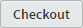

7.3
Regressing with Checkout
I can’t stress strongly enough, if you want to look at an earlier commit point do it with the checkout function.
I’m going to start from the same point I used for the reset in the previous section:

Figure 7.16 Final arrangement, all merged back to master branch
There is a single master branch with eight commits and the head is at the most recent commit, in my case [07fe437]. In Brackets, the history is:

Figure 7.17 Brackets commit history
And we have the following files:
| LIST OF FILES AT COMMIT 07FE437 TAG: P03 | |
|---|---|
|
index.html 01-intro.html 02-about.html README.md .gitignore 11-resources\01-css\style.css 11-resources\02-images\logo.png 11-resources\02-images\readme.png |
|
| Table 7.3 File list at commit point P03 [07FE437] |
Finally, Git is reporting:
Nothing to commit, working directory clean
So let’s do a checkout, again I’m going back to the first P01 commit point, [25c1410] in my list.
To do this, open the commit history (Figure 7.17) and click anywhere on the P01 commit line [25c1410]. This will open the commit information screen:
Figure 7.18 P01 commit point information screen
This time click the checkout button . This will open the checkout warning dialogue box:

Figure 7.19 Checkout function warning
This is telling us that the project is going into a detached head state and that we can’t make any further commits. This is ok, we don’t want to make any commits—we just want to have a look. Click .
Open the commit history, and let’s see what we have:
Figure 7.20 Commit history after the checkout
Right, things are a bit different this time. We have just the two commit points (D01 and P01) exactly as we had with the reset, but this time we are not on the master branch.
We are now on a branch called 25c1410. The master branch is still there, click the down arrow next to the 25c1410 branch and you will see it:

Figure 7.21 Branches present after a checkout
We could switch back to it, and we will; but first let’s look around.
The files have changed to match the earlier commit point (just like with the reset); we now have these files:
| LIST OF FILES AT COMMIT 07FE437 TAG: P03 | |
|---|---|
|
index.html README.md .gitignore 11-resources\01-css\style.css 11-resources\02-images\logo.png 11-resources\02-images\readme.png |
|
| Table 7.4 File list after reset to P01 [25c1410] |
These files have disappeared:
|
01-intro.html 02-about.html |
|
Again if we were to look inside the lab-01-website folder with Windows Explorer we would only see index.html, README.md and .gitignore.

Figure 7.22 The working directory after the checkout
So, the project has moved back in time to the earlier commit points in exactly the same way as it did with the reset and if I opened any of the project files, they would be exactly as they were at the time of the [25c1410] commit.
The best practice approach to resetting (§ 2.5.4), is that if we want to reinstate the files at an earlier commit, we copy any or all of the files from this checked out commit point and, after moving back (as in back to the future) to the most recent commit point, paste them into the working area and make a new commit with the old files from the earlier commit (i.e. replace the most up to date files with older files).
This, if you remember is where the reset fell down, we couldn’t easily get back to the most recent commit point (there was a lot of messing about with the command line).
Things are much easier with the checkout function.
The most recent commit point (in my case [07fe437]) is the head of the master branch. To get back, just switch to the master branch.
Click the arrow next to the branch and in the dropdown click :
Figure 7.23 Change branch present after a checkout
This instantly takes us back to where we were; open the commit history and everything is back where it was—easy:

Figure 7.24 Returning to the most recent commit
This time if you click the arrow next to the master branch, there will not be any other branches listed, the 25c1410 branch has disappeared.
The 25c1410 branch that was created by the checkout is just a temporary branch—it disappears when we switch off it to any other branch.
The checkout is a much better way of viewing earlier commits.
|
ONLY EVER USE THE CHECKOUT FUNCTION |

{kind=link}
{kind=link}
{kind=link}